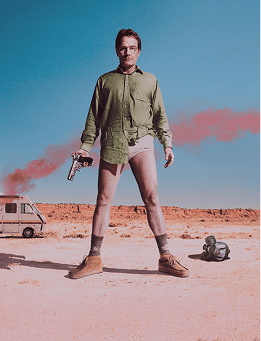
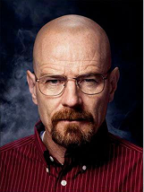
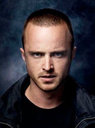
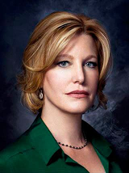
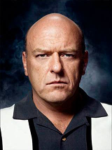
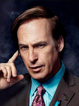
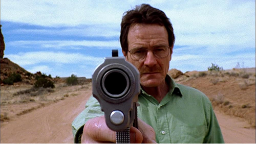
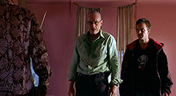
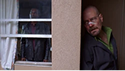
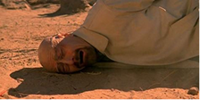

Breaking Bad es una aclamada serie de televisión estadounidense creada y producida por Vince Gilligan, que se estrenó el a través de la cadena AMC. Desde su primer episodio, la historia propone una premisa tan simple como inquietante: ¿qué haría una persona común si se viera empujada al límite?
A partir de esa pregunta, la serie construye un relato intenso y progresivo sobre la transformación de su protagonista, Walter White, un profesor de química cuya vida cambia radicalmente tras recibir un diagnóstico de cáncer terminal.
A lo largo de sus temporadas, la serie explora con profundidad la evolución moral de su protagonista, mostrando cómo decisiones aparentemente justificables pueden derivar en consecuencias cada vez más oscuras. Concebida por Gilligan con la idea de convertir a un hombre común en un antihéroe, la narrativa se apoya en una construcción psicológica compleja, donde el poder, la ambición y la supervivencia redefinen constantemente los límites entre el bien y el mal. El resultado es una historia atrapante que no sólo redefinió el género dramático televisivo, sino que también dejó una huella duradera en la cultura popular.

Ficha Técnica
Año
2008–2013
Temporadas
5
Episodios
62
Creador
Vince Gilligan
Género
Drama, crimen
Historia
2008 — El estreno discreto
Su estreno en 2008 por la cadena AMC no fue inicialmente un fenómeno masivo, e incluso su primera temporada se vio afectada por la huelga de guionistas de Hollywood. A pesar de esto, la serie comenzó a construir lentamente una base de seguidores gracias al boca a boca.
2010: La crisis de la cancelación
Uno de los momentos más críticos llegó alrededor de la tercera temporada, cuando AMC consideró cancelar la serie. Ante esta incertidumbre, la productora Sony Pictures Television evaluó venderla a otras cadenas. Finalmente, AMC decidió renovarla, marcando un punto de inflexión.
2011: El "Efecto Netflix"
El verdadero impulso llegó con la incorporación de la serie al catálogo de Netflix. Este acuerdo permitió que nuevos espectadores descubrieran la historia desde el inicio, lo que provocó un crecimiento exponencial en su audiencia.
2012: La estrategia de la temporada final
La serie dividió su quinta y última temporada en dos partes, aumentando la expectativa del público y transformando su final en un verdadero evento televisivo.
2013: El final que lo cambió todo
El episodio final consolidó a Breaking Bad como uno de los mayores fenómenos culturales de la televisión moderna, alcanzando más de 10 millones de espectadores.
Personajes

Walter White
Walter White
Interpretado por Bryan Cranston
Profesor de química que se vuelve narcotraficante, protagonista central y antihéroe trágico. Su arco narrativo sigue su descenso moral: comienza cocinando metanfetamina para pagar su cáncer y termina como un criminal despiadado conocido como "Heisenberg".

Jesse Pinkman
Jesse Pinkman
Interpretado por Aaron Paul
Joven socio de Walt y coprotagonista cuyo arco va de criminal despreocupado a víctima culpable. Su inocencia y conflicto moral sirven de contrapunto al de Walter.

Skyler White
Skyler White
Interpretada por Anna Gunn
Esposa de Walt y figura de moralidad familiar. Actúa como la contraparte ética de Walt, luchando por proteger a su familia mientras enfrenta la criminalidad de su marido.

Hank Schrader
Hank Schrader
Interpretado por Dean Norris
Agente de la DEA y cuñado de Walt. Representa la ley y la justicia. Su cacería de Heisenberg provee tensión permanente.

Saul Goodman
Saul Goodman
Interpretado por Bob Odenkirk
El abogado colorido y oportunista que sirve de alivio cómico. Consigue contactos, blanquea dinero y encuentra soluciones legales (o no) para Walt y Jesse.
Episodios Destacados

Pilot
Temporada 1, Episodio 1
El episodio piloto marca el inicio de toda la historia y presenta la transformación inicial de Walter White. Tras recibir su diagnóstico de cáncer, Walter toma la decisión de entrar al mundo del narcotráfico junto a Jesse Pinkman. Este capítulo establece el tono de la serie y plantea el conflicto central: la lucha entre la moralidad y la supervivencia.
Grilled
Temporada 2, Episodio 2
Walter y Jesse son capturados por Tuco Salamanca, uno de los primeros grandes antagonistas de la serie. La tensión psicológica domina toda la narrativa, mientras Walter comienza a demostrar su capacidad de manipulación y sangre fría para salir de situaciones extremas.


Face Off
Temporada 4, Episodio 13
El final de la cuarta temporada presenta uno de los enfrentamientos más icónicos: Walter White contra Gus Fring. La resolución es impactante y marca la consolidación de Walter como una figura dominante dentro del mundo criminal.
Ozymandias
Temporada 5, Episodio 14
Considerado uno de los mejores episodios de la televisión, este capítulo muestra la caída total de Walter White. Es un episodio emocionalmente devastador que funciona como el clímax de toda la serie.

Videos
La esencia de la serie es la transformación de Walter White, su compleja relación con Jesse Pinkman y la tensión constante que define su historia. A través de estos contenidos, vas a poder entender tanto la evolución de los personajes como los puntos más intensos de la trama.
El ascenso y caída de Walter White
Resumen del ascenso y caída de Walter White, ideal para entender toda la serie rápidamente.
Repaso de las 5 temporadas
Video que repasa las 5 temporadas y los momentos clave de la historia.
Unite al club de fans
Somos la comunidad argentina más grande de fans de Breaking Bad. Registrate y enterate de eventos, novedades y encuentros con otros fanáticos de la serie.